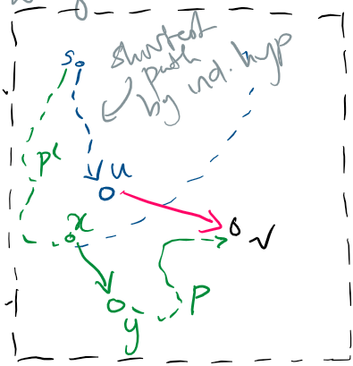
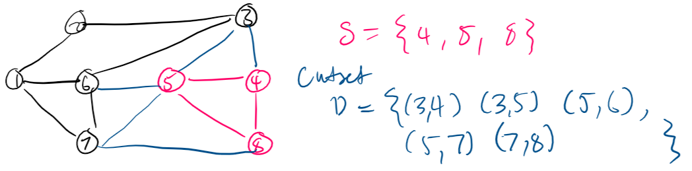
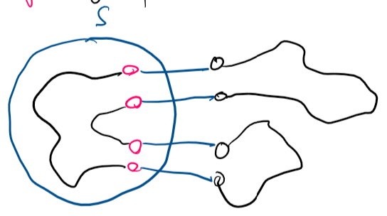
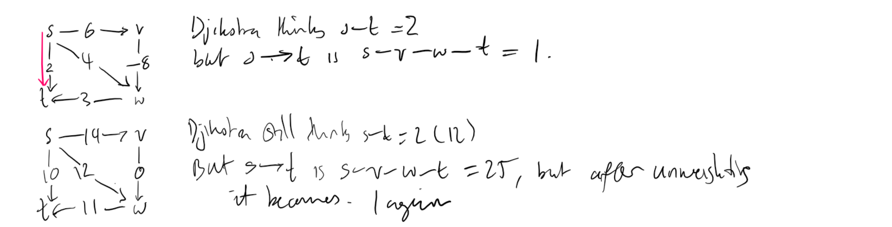
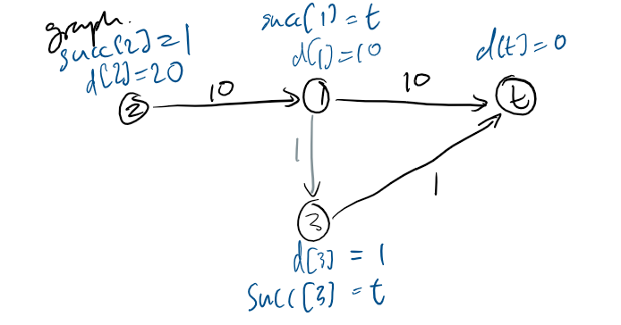
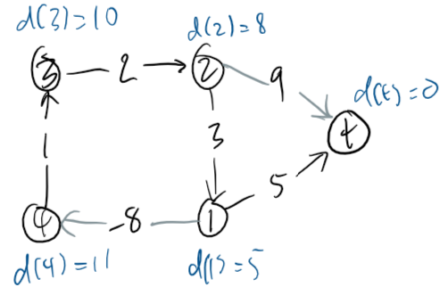
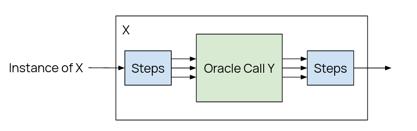
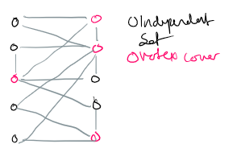

*that might be incomplete depending on timing this is 1.5 days before the exam.
Greedy Algorithms
Overview
A Greedy Algorithm is one that builds up a solution from small steps, snatching or discarding the next available one without regard for the bigger picture, based on some simple rule(s).
You manage a scheduling system for a conference room, and want to schedule as many meetings as possible, with no overlap between meetings and no rearranging of meeting times.
Let us call meetings jobs, the general term for this problem. Job \(j\) starts at time \(s_j\) and finishes at \(f_j\). Two jobs are compatible [to be scheduled] if they do not overlap.
Our goal is to make an algorithm with the following inputs and outputs
in: A sequence of jobs (which are just pairs \((s_j,f_j\))
out: The maximum subset of mutually compatible jobs
We can use a greedy algorithm to solve this, but we need the rules that allow us to implement it. We'll sort the jobs by a specific rule, then take jobs in order, provided they are compatible with all the jobs already selected.
This ordering rule can be many things: earliest start time, earliest finish time, or shortest interval time being some possibilities. (You can try work out which one is correct, but I'm going to immediately reveal it below.)
Earliest Finish First
This is the correct sort rule. We can write an algorithm, for jobs \(j_i\) with starts/finishes \((s_i, f_i)\) for \(i = 1..n\).
earliest_finish_first(\(n\), \(s_{1..n}\), \(f_{1..n}\)):
sort jobs by finish time, and renumber them such that \(f_1 \leq f_2 \leq ... \leq f_n\)
\(S = \varnothing\) # set of jobs selected
for \(j = 1 .. n\):
if job \(j\) compatible with \(S\):
\(S\).add(\(j\))
return \(S\)
Running Time
We can prove this algorithm runs with \(O(n \log n)\). This is because:
We know that sorting is at best \(O(n \log n)\).
The for loop, we can prove is only \(O(n)\). If the for loop is \(O(n)\), then the compatibility check must be \(O(1)\)
If we keep a track of job \(j*\), which is the last job added to \(S\)
\(j\) would be compatible with \(S\) if and only if \(s_j \geq f_{j*}\)
Thus comparison is indeed order \(O(1)\).
Proof of Correctness
Theorem. The Earliest Finish First (EFF) algorithm is optimal.
Proof. We will prove by contradiction. Let us assume EFF is not optimal.
Let \(i_1, i_2, ..., i_k\) be the set of jobs selected by EFF.
Let \(j_1, j_2, ..., j_m\) be the optimal set, with \(i_1 = j_1, i_2 = j_2, ... i_r = j_r\) for as large of a value of \(r\) as possible. If EFF is not optimal, then \(m > k\).
If job \(i_{r+1}\) does not exist, then by nature of the algorithm all jobs after \(i_r\) are incompatible with it. However, since \(i_r = j_r\), and we know that the optimal must strictly have more jobs than EFF, there must be compatible jobs after \(i_r\), thus we reach a contradiction.
If job \(i_{r+1}\) exists, it cannot finish later than \(j_{r + 1}\), because of the sorting rule. Thus we can just replace \(j_{r+1}\) with \(i_{r+1}\), and guarantee that all jobs \(j_r+2\) and afterwards is compatible. Thus the optimal is still optimal, and the condition that we have the largest possible \(r\) has been violated.
$$\tag*{$\Box$}$$
Interval Partitioning
Interval Partitioning
You are in charge of scheduling lectures into lecture rooms. Lecture \(j\) starts at \(s_j\) and finishes at \(f_j\), and your goal is to find the minimum number of classrooms needed to schedule all lectures such that no two overlap.
in: A sequence of jobs (which are just pairs \((s_j,f_j\))
out: The smallest possible collection of sets (classrooms) of compatible jobs
(As the section implies) we use a greedy algorithm, and need to decide the ordering rule. This can be: Earlist start first, Earliest finish first, Shortest lecture first, or something else.
Earliest Start First
This is the correct sort rule.
earliest_start_first(\(n\), \(s_1 .. s_n\), \(f_1 .. f_n\)):
sort lectures by start times, renumber s.t. \(s_1 \leq s_2 \leq ... \leq s_n\)
\(d = 0\) # number of allocated rooms
for \(j = 1 .. n\):
if (lecture \(j\) compat. with all lectures in any classroom \(k\)):
schedule \(j\) in \(k\)
else:
allocate new room \(d+1\)
schedule \(j\) in room \(d+ 1\)
\(d = d+1\)
return the schedule
Running Time
If we use a suitable data structure to store the rooms in, this algorithm can be \(O(n \log n)\).
First of all, sorting is \(O(n \log n)\). If we store all rooms in a Priority Queue, with the key being the finish time of the last lecture:
When we allocate a new room, we insert it into the PQ.
When we schedule \(j\) in \(k\), we increase the key of \(k\) to \(f_j\).
To determine whether \(j\) is compatiable with any \(k\), we compare \(s_j\) to findMin of the PQ.
The total number of searches in the priority queue is on order \(O(n)\), where each PQ operation is \(O(\log n)\), thus we get \(O(n \log n)\).
This implementation will always schedule the next compatible lecture in the room with the earliest finish time.
Definitions and Observations
Definition. The Depth of a set of open intervals is the max number of intervals that contain some point. Basically, the point where the most lectures overlap from all rooms determines the depth, which is the number of rooms.
Minimum number of rooms would equal the depth (since no lectures can overlap)
Also take note that the Earliest Start First (ESF) never schedules two incompatible lectures in one room.
Proof of Correctness
Theorem. ESF is optimal.
Proof. Let \(d =\) the number of rooms ESF allocates.
Room number \(d\) is opened because we need to schedule a lecture \(j\), which is incompatible with all lectures in rooms \(1 .. d-1\).
Because of the earliest start sort, each incompatible lecture in all prior rooms must have a start time \(\leq s_j\). Furthermore, all \(d\) lectures (including \(j\)) will have ended by \(f_j\).
Thus there will be \(d\) lectures overlapping at some time \(s_k + \epsilon\) for a number \(\epsilon\), which is our depth. Since depth = max number of rooms, this demonstrates that ESF is optimal.
$$\tag*{$\Box$}$$
Minimising Lateness
Minimising Lateness
You are in charge of a single mainframe that can process one job at one time. Job \(j\) requires \(t+j\) units of time to process and is due at \(d_j\) (but can be late). (If \(j\) starts at \(s_j\) it finishes at \(f_j = s_j + t_j\).) Your goal is to schedule jobs to minimise maximum lateness.
Let lateness be defined \(\ell_j = \max(0, f_j - d_j)\), and max lateness is thus \(L = \max(\textrm{all } \ell_j)\).
in: A sequence of jobs (which are just pairs \((t_j,d_j\))
out: An ordering of jobs with the least amount of lateness.
Some rules we can consider are order by: shortest processing time, earliest deadline, or shortest slack (\(d_j-t_j\)).
Earliest Deadline First
earliest_deadline_first(\(n\), \(t_{1..n} \), \(d_{1..n} \)):
sort jobs by due time and renumber s.t. \(d_1 \leq d_2 \leq ... \leq d_n\)
\(t = 0\)
for \(j = 1..n\):
assign job \(j\) to interval \([t, t+t_j] \)
\(s_j = t; f_j = t+t_j\)
\(t = t+t_j\)
return intervals \([s_1, f_1] .. [s_n, f_n] \)
Important Observations and Lemmas
1. There exists an optimal schedule with no idle time. If we have a schedule with idle time between jobs, which has no lateness, we can simply remove all idle time and still have no lateness.
2. Earliest Deadline First (EDF) has no idle time by design.
Definition. Given a schedule S, an inversion is a pair of jobs \(i, j\) where \(i < j\) (meaning i is due before j) and \(j\) is scheduled before \(i\).
3. The EDF schedule is the (unique) schedule with no inversions (by design).
4. If some schedule with no idle time has an inversion, then it has an adjacent inversion (inverted jobs are next to each other)
Proof. Let \(i-j\) be the closest inversion:
If \(i, j\) are adjacent, we are done. However, if we have a case like the following:
Schedule: ...[ ][j][k][ ][ ][i][ ]...
Then there would exist a job \(k\) between \(j, i\), which is directly after \(j\).
If \(j > k\), then \(j-k\) is an adjacent inversion. Else if \(j < k\), then \(k > i\) and \(k-i\) is a closer inversion. Repeat until we encounter an adjacent inversion. $$\tag*{$\Box$}$$
Key Lemma. Eschanging two adjacent inverted jobs \(i, j\) reduces the number of inversions by one, and does not increase maximum lateness.
Proof. Let \(\ell\) denote the lateness before, and \(\ell'\) denote lateness after.
\(\ell'_k = \ell_k \; \forall k \neq i, j\), and \(\ell'_i \leq \ell_i\) when \(i\) is moved forward in the schedule.
if job \(j\) is not late, we are done. If it is late, then the new lateness \(\ell'_j = f'_j - d_j\) (by definition)
\begin{align}
\ell'_j &= f'_j - d_j \\
&= f_i - d_j \textrm{ (see diagram)} \\
&\leq f_i - d_i \textrm{ since } d_i \leq d_j \\
&\leq \ell_i
\end{align}
Thus lateness does not increase. $$\tag*{$\Box$}$$
Proof of Correctness
Theorem. EDF is optimal.
Proof. Let us define \(S*\) to be the optimal schedule with the fewest inversions. (We say that optimal solutions may have inversions).
By observation 1 \(S*\) will have no idle time.
Case 1 If \(S* \) has no inversions, then the schedule \(S\) generated by EDF will equal \(S*\) by observation 3.
Case 2. If \(S* \) has an inversion:
Let \(i-j\) be an adjacent inversion (Obs. 4)
Exchanging \(i, j\) decreases the number of inversions by 1, and does not increase max lateness (lemma)
This contradicts the fewest inversion condition on \(S*\), as we can exchange all the way to no inversions and be (more) optimal - which is the schedule generated by EDF.
$$\tag*{$\Box$}$$
Strategies to Analyse Greedy Algorithms
Three strategies were explored for analysing and proving the optimality of greedy algorithms.
Greedy Stays Ahead
Demonstrating that after each incremental step, the greedy algorithm solution is at least as good as any other solution. This incremental building was employed in the proof of Interval Scheduling.
Structural Bound
Discover a simple bound / principle on the structure of the problem, which gives the lowest (most optimal) bound on possible solutions, and show that the greedy algorithm always reaches that bound. This was employed in Interval Partitioning with the depth bound.
Exchange Argument
By gradually transforming a hypothetical optimal solution (which is not the greedy algorithm one) into the greedy algorithm solution without hurting its quality. This was employed by swapping inversions in Minimising Lateness.
Problem. Given a digraph \(G = (V, E)\), with edge lengths \(\ell_e \geq 0\), a source \(s \in V\) and a destination \(t \in V\), find the shortest directed path from s to t.
Called single pair because there is one source and one destination.
Variations
We can also have just single source shortest path, where from a source we have to find the path to ALL other vertices (i.e. tree rooted at S).
Djikstra's Algorithm
Djikstra's is a well known algorithm for single source shortest path. It is a greedy algorithm, and works on graphs with non-negative weights only.
Maintain a set of explored nodes S and an array \(d : d_u =\) length of shortest path \(s \leadsto u\).
Initially set \(S \longleftarrow \{s\};\; d_s \longleftarrow 0\).
Repeatedly choose new \(v \not \in S\) which minimises the "path value" of \(v: \pi(v)\).
\[\pi(v) = \min_{e = \langle u, v \rangle : u \in S}(d_u + \ell_e)\]
i.e. pick the edge leading out from any node \(u\) in the explored set which has the smallest \(d_u + \ell_e\) value.
Add that \(v\) to S, and set \(d_v \longleftarrow \pi(v)\). If we need to recover the path later, store also the edge that lead to \(v\).
Proof of correctness
Assertion. For all nodes \(u \in S, \; d_u\) is the length of the shortest path.
Proof. Do induction on \(|S|\), the explored set.
Base case: \(|S| = 1,\; S = \{s\},\; d_s = 0\), which is trivially true.
Induction: Assume true for some \(|S| = n \geq 1\).
Let \(v\) be the next node added to S. \((u, v)\) is that final edge.
A shortest path \(s \leadsto u + (u, v)\) has path length \(\pi(v)\).
Consider any other \(s \leadsto v\) path P (we want to prove that P is no shorter than \(\pi(v)\)).

Green path in figure
The path must have an edge where it leaves S. Let the first edge that does this be \(e = (x, y)\) for some nodes \(x, y\).
Since Djikstra, by definition, picks the node outside of S that is closest to \(s\), \(P \geq \pi(v)\) as soon as \(y\) is reached, since \(v\) was picked before \(y\).
Formally, this can be written as
\[\ell(P) = \ell(P') + \ell_{(x,y)} = d_x + \ell_e = \pi(y) \geq \pi(v)\]
$$\tag*{$\Box$}$$
An efficient implementation - optimisations
Optimisation 1. For all unexplored nodes \(v \not \in S\), explicitly maintain \(\pi(v)\) instead of computing from definition each time. Initialise it to \(\infty\) when we don't have a value.
\(\pi(v)\) can only decrease, since S increases and we allow more nodes into the minimisation formula. Suppose we do get a \(u\) added to S, with an edge \(e = \langle u, v \rangle\), it is sufficient to compute just
\[\pi(v) = \min(\pi(v), \pi(u) + \ell_e)\]
Optimisation 2. Use a min-oriented priority queue to choose unexplored node \(v\) as efficiently as possible, sorting by the value \(\pi(v)\).
Implementation pseudocode
djikstra(\(V, E, \ell, s\)):
for each \(v \not \in S\):
\(\pi[v] \longleftarrow \infty\)
\(pred[v] \longleftarrow \textrm{NULL}\)
\(\pi(s) \longleftarrow 0\)
pq \(\longleftarrow\) new PriorityQueue
for each \(v \in V\):
pq.insert(\(\pi[v], v\))
while not pq.empty:
\(u \longleftarrow\) pq.del_min()
for each edge \(e = \langle u, v \rangle \in E\):
if \(\pi[v] > \pi[u] + \ell_e\):
pq.decrease_key(\(v, \pi[u] + \ell_e\))
\(\pi[v] \longleftarrow \pi[u] + \ell_e\)
\(pred[v] \longleftarrow e\)
Time complexity
The running time is dominated by the number of priority queue operaions. We insert, delete minimum, and decrease key a total of \(O(n)\) times. Our implementation of the priority queue thus determines our running time.
Note that \(m\) is used for the number of edges, which is \(\Theta(n)\) on sparse graphs and \(\Theta(n^2)\) on dense graphs.
PQ
Insert
Delete-min
Decrease-key
Total
Node indexed array: \(A[i] =\) priority of \(i\)
\(O(1)\)
\(O(n)\)
\(O(1)\)
\(O(n^2)\)
Binary Heap
\(O(\log n)\)
\(O(\log n)\)
\(O(\log n)\)
\(O(m \log n)\)
"D-way Heap"
\(O(d \log_d n)\)
\(O(d \log_d n)\)
\(O(\log_d n)\)
\(O(m \log_{\frac{m}{n}} n)\)
Fibonacci Heap
\(O(1)\)
\(O(\log n)\) amortised
\(O(1)\) amortised
\(O(m + n \log n\)
Integer PQ
\(O(1)\)
\(O(\log \log n)\)
\(O(1)\)
\(O(m + n \log \log n)\)
For dense graphs, a node-indexed array is best, whilst for sparse graphs, a binary heap is best.
Minimum Spanning Trees
Cutsets
Definition. A cut is an arbitrary partition of nodes into two non-empty sets: \(S, V \setminus S \;(\textrm{or } V - S)\).
Definition. A cutset of cut S is the set of edges : each edge has exactly one endpoint in S.

A cut (pink) and a cutset (blue edges)
Cycle-cut intersetion
Proposition. An (arbitrary) cycle intersects a cutset on an even number of edges.
Proof. by picture:

In short, if a cycle and cut don't intersect, we're all OK. If a cycle starts in the cut and leaves the cut, it must eventually return, so leaving and returning matches, making pairs.
$$\tag*{$\Box$}$$
Given an undirected, connected graph with weights, the minimum spanning tree is the spanning tree with minimum edge cost.
Theorem.Cayley's Theorem. A complete graph \(k_n\) has \(n^{n-2} \) spanning trees.
This theorem means though that brute-forcing spanning trees is a no-no.
Fundamental cycle
Define. Let \(H=(V, T)\) be spanning tree of \(G = (V, E)\). For any non-tree edge \(e \in E, \; T \cup \{e\}\) contains a unique cycle C (maximal acylcic).
Divide and conquer is a strategy for solving algorithms where the main problem is divided into independent subproblems, which are then solved (conquered) recursively.
In general, this goes as follows:
Divide a problem of size \(n\) into subgroups, e.g. 2 subproblems of size \(\frac{n}{2}\) - typically \(O(n)\)
Solve the 2 subproblems recursively
Combine the subproblems into one - typically \(O(n)\)
This can end up faster than "traditional" polynomial time methods.
Merge Sort
Your classic divide and conquer sorting algorithm that you learned in GCSE.
Process
For an input size (n), divide into a left half and a right half. - \(O(n)\)
Recursively sort left and right halves (refer to above)
Combine two sorted halves, maintaining the order. - \(O(n)\)
Combining halves
Suppose we have two sorted halves A and B, with
\[A = [a_1, a_2, a_3], \; B = [b_1, b_2, b_3, b_4]\]
Maintain two pointers to the sorted arrays. Scan A and B, comparing \(a_i\) and \(b_j\). Append the smaller value to the output list, and increment that pointer only. Finally, append any left over values from one array if the other has reached the end.
Linear for scanning, constant for comparing, constant for appending.
Implementation
mergesort(list L):
if L.length = 1:
return L
divide L into two halves, A and B
A \(\longleftarrow\) mergesort(A)
B \(\longleftarrow\) mergesort(B)
L \(\longleftarrow\) merge(A, B) # implementation of this function
# is left as an excersise to the reader
return L
Let's say mergesort has a procesing time of \(T(n)\). Thus, every subproblem (\(A, B\)) takes \(T(\frac{n}{2})\) time. The merge portion as we know is linear, and is \(\Theta(n)\).
Thus we can conclude \(T(n)\) is bounded by \(\Theta(n) + 2T(\frac{n}{2})\).
Useful recurrence relation
The above gives rise to a useful recurrence relation.
Definition. Let \(T(n)\) to be the number of comparisons mergesort makes proportional to list size \(n\). This satisfies the recurrence
\[T(n) = \begin{cases} 0 & \textrm{if } n = 1 \\ T(\left \lfloor{\frac{n}{2}} \right \rfloor) + T(\left \lceil{\frac{n}{2}} \right \rceil) + n & \textrm{if } n > 1 \end{cases}\]
Complexity of merge sort
Claim. For mergesort, \(T(n) = O(n \log n)\).
Assume \(n\) is a power of 2. This does not affect the integrity much but makes proving easier.
The following proofs demonstrate important techniques so are shown by default. Clicking the drop-down bar (twice) will hide them.
Proof by tree
Assertion 1. \(T(n) = O(n \log n)\) if \(T(n)\) satisfies the following recurrence (given above assumption):
\[T(n) = \begin{cases} 0 & \textrm{if } n = 1 \\ 2T(\frac{n}{2}) + n & \textrm{if } n > 1 \end{cases}\]
Proof. Represent the recurrence in tree form:
On level \(i\), there are \(2^i\) nodes. Each node has \(\frac{n}{2^i} \) items so does that amount of work. Thus each level does \(n\) work.
\(n = 2^k\) (is a power of 2), and we halve \(n\) every time, thus we do \(k\) halvings to get to \(2^0\): 1 item. Thus \(k\) = the number of levels = \(\log_2 n\).
\(\log_2 n\) times \(n\) work gets \(O(n \log n)\)
$$\tag*{$\Box$}$$
Proof by induction
A proof method that may be easier to use (and certainly is easier to represent in HTML). We use the same proposition as above.
Let us look at \(T(2n)\).
\begin{align}
T(2n) &= 2T(n) + 2n\\
&= 2n \log_2 n + 2n \textrm{ by ind hyp.} \\
&= 2n (\log_2 n + 1) = 2n (\log_2 n + \log_2 2) \\
&= 2n \log_2(2n).
\end{align}
$$\tag*{$\Box$}$$
Extending inductive proof
So far we have been ignoring floors and ceilings. In fact, we can take as granted that floor and ceil may be ignored outright. However, here's an inductive proof for the assertion that uses floor and ceil.
Assertion 2. \(T(n) \leq n \left \lceil{\log_2 n} \right \rceil\) if \(T(n)\) satisfies the following recurrence. \(n\) is not assumed to be a power of 2.
\[ \require{enclose} \]
Proof. Strong induction on \(n\). Instead of just assuming the prior is true, we assume all priors are true. The base case is the same and is true. Please note \(\log\) means \(\log_2\).
Let \(n_1 = \left \lfloor{n} \right \rfloor\) and \(n_2 = \left \lceil{n} \right \rceil\). Note that \(n_1 + n_2 = n\). The inductive hypothesis is that the recurrence is satisifed for all values up to \(n-1\).
Some easy-to-miss changes are circled. The circles are for emphasis and are otherwise meaningless.
\begin{align}
T(n) &\leq T(n_1) + T(n_2) + n \\
&\leq n_1 \left \lceil{\log n_1} \right \rceil + n_2 \left \lceil{\log n_2} \right \rceil + n \textrm{ by ind hyp.} \\
\because n_2 \geq n_1,\; T(n) &\leq n_1 \left \lceil{\log
{\scriptstyle \enclose{circle}{\kern .06em n_2\kern .06em}}
} \right \rceil + n_2 \left \lceil{\log n_2} \right \rceil + n \\
&\leq (n_1 + n_2) \left \lceil{\log n_2} \right \rceil + n \\
& \leq n \left \lceil{\log n_2} \right \rceil + n \\
& \leq n (\left\lceil{\log {\scriptstyle \enclose{circle}{\kern .06em n \kern .06em}} }\right\rceil + 1) + n \; *\\
& \leq n \left\lceil{\log n}\right\rceil .
\end{align}
$$\tag*{$\Box$}$$
The jump marked \(*\) is explained as follows:
\begin{align}
2^{\log n_2} = n_2 &= \left\lceil{\frac{n}{2}}\right\rceil \\
&\leq \left\lceil{\frac{2^\left\lceil{\log n}\right\rceil }{2}}\right\rceil \\
&\textrm{since } n = 2^{\log n} \textrm{, } 2^{\left\lceil{\log n}\right\rceil } \textrm{ must be not lower. } \\
&\leq \frac{2^{\left\lceil{\log n}\right\rceil }}{2} \textrm{ since RHS must } \in \mathbb{Z} \\
&\leq 2^{\left\lceil{\log n}\right\rceil -1} \\
\therefore \log n_2 = \log{2^{\log n_2}} &= \left\lceil{\log n}\right\rceil - 1.
\end{align}
If you're curious, right click -> show math as tex commands, it's nasty to write, thank god for vscode snippets.
Closest Pair of Points
Problem
Given \(n\) points in a euclidean plane, find the closest pair of points.
Possible non-divide and conquer solutions
Listed are some non-divide and conquer solutions, for interest.
Brute force: the "naive" algorithm, I think you can guess what this does. Solves in \(\Theta(n^2)\) but we can do better.
Dimension collapsing: we can consider only 1 dimension (say, x), sort the points and find the closest. This can be done in \(\Theta(n \log n)\) by sorting points, and comparing only consecutive ones. The only problem is it has counterexamples and may not always work depending on your configuration of points.
This relies on an assumption of non-degeneracy (see later).
We can extend this idea to doing dimension collapsing for 2D by repeating the process for both x and y, finding the points which are closest together on those two axes.
However this is also flawed and has counterexamples.
Division: We can try a technique more akin to divide and conquer - dividing the space up into halves or quadrants, then considering each quadrant separately, then the boundaries of quadrants. Ideally we'd want all quadrants to have an equal number of dots, but this is hard to guarantee.
The divide and conquer algorithm
Definition. the non-degeneracy assumption asserts that each point should have a unique \(x\) coordinate.
We divide by drawing a vertical line \(L : \frac{n}{2}\) points on each side. We conquer by recursively finding the closest point in each "half". We combine by checking if there's a closer pair that lies across the boundary.
It seems initially hard to do this more efficiently than the brute force \(n^2 \), but there are a few tricks we can employ.
Take the minimum distance from the pairs on either side, let it be \(\delta\). Say our two halves find closest points with length 12 and 21, \(\delta = \min(12, 21)\). It is the sufficient to only check points within \(\delta\) distance from L.
We need only sort the boundary points by their \(y\) coordinate, then compute the closest points in \(y\). This much may be quite easy to understand, but that still leaves us with quadratic time if we have to compute distances to all other points, but in fact, we only need to compute 7.
Every point checks against up to 7 others, and the minimum distance found is kept track of as the boundary points are iterated through. This actually will reduce our combine step down to linear time: \(O(n)\).
Why 7!?
To prove this, first let all boundary points be sorted by y coordinate, and numbered in increasing order, \(s_1, s_2, \dots, s_n\). \(s_i\) is the point with the \(i\)th largest y value.
Proposition. If \(|i-j| \geq 7\), the distance between \(s_i, s_j\) is at least \(\delta\).
Let us take any point \(s_i\) with some \(y\) coordinate. Consider a rectangle \(\delta\) tall and \(2\delta\) wide, spanning the boundary region with its bottom being the \(y\) coord of \(s_i\). Split this rectangle into 8 squares, \((0.5\delta)^2\).
The furthest away two points could be in one single square is at opposite diagonals, \(\frac{\delta}{2}\) away. \(\frac{\delta}{2 } < \delta\) - this means that this is an impossible configuration: both points would be on the same side, with the distance between less than \(\delta\), which is defined to be the shortest distance from both sides.
Thus, there can only be one point per square. At most 7 other points may be valid options (have distances closer than \(\delta\)), so we need only check 7.
$$\tag*{$\Box$}$$
Implementation
closestPair(points \(p_1, p_2, \dots, p_n\)):
computer vertical line \(L\) such that half the points are on either side # (1)
\(\delta_1 \longleftarrow\) closestPair(left half)
\(\delta_2 \longleftarrow\) closestPair(right half) # (2)
\(\delta \longleftarrow \min(\delta_1, \delta_2)\)
delete all points further than \(\delta\) from \(L\) # (3)
sort remaining points by \(y\) coordinate # (4)
for \(p \in \) remaining points: # (5)
work out the distances up to the next 7 points
if the smallest of those \(\leq \delta\):
\(\delta \longleftarrow \) that distance
return \(\delta\)
Running time
The labelled sections are as follows: (1) is \(O(n)\), (2) is \(2T(\frac{n}{2})\), (3) is \(O(n)\), (4) is \(O(n \log n)\), and 5 is \(O(n)\).
As to \(T(n)\), knowing the running time of dividing and combining steps we can get the recurrence
\[ T(n) = \begin{cases} \Theta(1) & n = 1 \\ T(\left\lfloor{\frac{n}{2}}\right\rfloor ) + T(\left\lceil{\frac{n}{2}}\right\rceil ) + \Theta(n \log n) & \textrm{otherwise} \end{cases} \]
This resolves down to a running time of \(\Theta(n \log^2 n)\).
Improvements on running time
Later work has been done to push the algorithm down to \(O(n \log n\). This involves techniques such as preserving sorting of delta strip, returning lists of points sorted by x and y, and sorting points by merely doing one merge, which is linear time.
Master Theorem
Premise
The master theorem is a single method to solve all common recurrences of the form
\[T(n) = aT(\frac{n}{b}) + f(n)\]
Where \(a, b \in \mathbb{Z}^+\), \(b \geq 2\), and with \(T(0) = 0, \; T(1) = \Theta(1)\).
An input of size \(n\) makes \(a\) recursive calls of size \(\frac{b}{n}\). We also assume that \(f(n) \geq 0\).
Deriving via recursion trees
We can solve such recurrences with a recursion tree. (We assume that \(n\) is a power of \(b\).)
Let \(a=\) branching factor
\(a^i = \) number of subproblems at layer \(i\)
\(1+\log_b n\) levels
\(\frac{n}{b^i} =\) size of subproblems at layer \(i\).
Suppose \(T(n)\) satisfies \(T(n) = aT(\frac{n}{b}) + n^c\) for some c: i.e. \(f(n)\) is a polynomial.
Then at we have \(n^c\) work at layer 0, \(a(\frac{n}{b})^c\) at 1, \(a^2 \frac{n}{b^2}^c\) at 2, ..., \(a^i \frac{n}{b^i}^c\) at level \(i\), for a total of \(\log_b (n) \) levels.
The last \(\log_b n\)th level has \(a^i = a^{\log_b n} = n^{\log_b a}\):
\[a^{\log_b n} = (b^{\log_b a})^{\log_b n} = b^{\log_b a \cdot \log_b n} = (b^{\log_b n})^{\log_b a} \]
At level \(i\), the work is \(a^i (\frac{n}{b^i})^c = a^i \frac{n^c}{b^{ic}} = n^c \frac{a^i}{b^{ic}} = n^c (\frac{a}{b^c})^i\).
Thus we can say \(T(n) = n^c \sum_{i=0}^{\log_b n} r^i\) where \(r = \frac{a}{b^c}\) (which is a constant).
Looking at this sum, we can get that
\[
T(n) = n^c \sum^{\log_b n}_{i=0} r^i = \begin{cases}
\Theta(n^c) &\textrm{if }r<1 &c > \log_b a\\
\Theta(n^c \log n) &\textrm{if } r = 1 &c = \log_b a \\
\Theta(n^{\log_b a}) &\textrm{if } r > &c < \log_b a 1
\end{cases}
\]
Since it is a gemetric series thus follows geometric series rules.
Master Theorem
Theorem. Let \(a \geq 1, b \geq 2, c > 0.\) Let \(T(n)\) be a function on \(\mathbb{Z}_{\geq 0} \) that satisfies the recurrence
\[T(n) = aT(\frac{n}{b}) + \Theta(n^c)\]
With \(T(0) = 0, T(1) = \Theta(1),\) and \(\frac{n}{b}\) is either \(\left\lceil{\frac{n}{b}}\right\rceil \) or \(\left\lfloor{\frac{n}{b}}\right\rfloor \). Then the following cases apply:
\(c < \log_b a \implies T(n) = \Theta(n^{\log_b a})\) - recurring part dominates
\(c > \log_b a \implies T(n) = \Theta(n^c)\) - processing part dominates
Overview of proof
Prove theorem when \(b \in \mathbb{Z}\) and \(n\) is a power of \(b\)
Extend the domains of reasoning to rationals or reals
Deal with floor and ceil for at most 2 levels, e.g.
\begin{align}
\left\lceil{\frac{\left\lceil{\frac{\left\lceil{\frac{n}{b}}\right\rceil }{b}}\right\rceil }{b}}\right\rceil & < \frac{n}{b^3} + (\frac{1}{b^2} + \frac{1}{b} + 1) \\
&\leq \frac{n}{b^3} + 2 \;\; (\because b \geq 2)
\end{align}
Theorem extension
We can replace \(\Theta\) with \(O, \Omega\) with no problem.
We can replace the initial conditions with \(T(n) = \Theta(1)\) for all \(n \leq n_0\) (which is a constant) and only require the recurrence holds for \(n > n_0\).
Can "merge" the floors and ceils, thus \(a=2, b=2, c=1\).
\(T(n) = O(n \log n)\)
Gaps in master theorem
Master theroem will not work if the number of branches is not constant: \(T(n) = nT(\frac{n}{2 }) + n^2 \),
The number of subproblem branches is less than 1: \(T(n) = \frac{1}{2} T(\frac{n}{2}) + n^2\),
And cannot directly work if work done by subproblem is not \(\Theta(n^c)\): \(T(n) = 2T(\frac{n}{2 }) + n \log n\).
Integer Multiplication
Addition and Subtraction
Numbers are stored and processed in computers at binary strings. This changes the considerations when doing basic arithmetic.
Looking at addition and subtraction first, i.e. given 2 binary strings \(a, b\) compute \(a+b\) and \(a-b\).
The addition and subtraction method one learns in primary school is the most efficient algorithm, at \(O(n)\) where \(n\) is the number of digits.
Multiplication
Problem. Given 2 \(n\) bit numbers, multiply them.
The "primary school algorithm" for binary multiplication, in short, is for every digit in the 2nd number, write the corresponding shifted 1st number multiplied by that digit. We can see that this performs \(\Theta(n^2)\) bit operations.
The question is, is the so-called "primary school algorithm" most efficient for multiplication?
The answer is no: one can do some divide and conquer tricks to make an algorithm more efficeint than this.
A possible algorithm
But can we do better? To multiply numbers \(x, y\), we could divide them in half into low and high order bits.
Take \(x = 10001101\), if we have an \(m = \left\lceil{\frac{n}{2}}\right\rceil \) that is the number of bits to split at, \(x = 2^m a + b\) where \(a, b\) are the first half and second half of the bits respectively.
\begin{align}
\textrm{let } &m = \left\lceil{\frac{n}{2}}\right\rceil \\
\textrm{then } &a = \left\lfloor{\frac{x}{2^m}}\right\rfloor & b = x \mod 2^m \\
&c = \left\lfloor{\frac{y}{2^m}}\right\rfloor & d = y \mod 2^m
\end{align}
Note that multiplying or dividing by a power of 2 is very easy (bit shifts). We know that
\[xy = (2^m a + b)(2^m c + d) = 2^{2m} ac + 2^m(bc + cd) + bd\]
Which as we can see contains 4 smaller multiplications: \(ac, bc, cd, bd\).
Implementation
\(\textrm{The implementation is left as an exersise to the reader.}\)
Running time
This algorithm has the recurrence
\[
T(n) = \begin{cases} \Theta(1) & n=1 \\ 4T(\left\lceil{\frac{n}{2}}\right\rceil + \Theta(n) & n > 1) \end{cases}
\]
Which, with the master theorem, \(a = 4, b = 2, c = 1\), we get... \(\Theta(n^2)\).
Ah.
Karatsuba algorithm
An algorithm developed by Anatoly Karatsuba in 1960 allows us to do multiplication quicker than quadratic time.
Divide \(x, y\) into low and high bits as in warmup :
\begin{align}
\textrm{let } &m = \left\lceil{\frac{n}{2}}\right\rceil
&x = 2^m a + b, \; y = 2^m c + d \\
\textrm{then } &a = \left\lfloor{\frac{x}{2^m}}\right\rfloor & b = x \mod 2^m \\
&c = \left\lfloor{\frac{y}{2^m}}\right\rfloor & d = y \mod 2^m
\end{align}
\begin{align}
xy = (2^m a + b)(2^m c + d) &= 2^{2m} ac + 2^m(bc + ad) + bd \\
&=2^{2m} ac + 2^m(ac + bd - (a-b)(c-d)) + bd
\end{align}
We then have divided \(xy\) down into three (nontrivial) multiplication options.
Implementation
karatsuba(\(x, y, n\)):
if \(n = 1\):
return \(xy\)
else:
calculate \(m, a, b, c, d\) as above
\(e \longleftarrow\) karatsuba(\(a, c, m\))
\(f \longleftarrow\) karatsuba(\(b, d, m\))
\(g \longleftarrow\) karatsuba(\(|a-b|, |c-d|, m\))
flip sign of \(g\) if needed
return \(2^{2m}e + 2^m(e + f - g) + f\)
Running time
We have the recurrence
\[T(n) = \begin{cases} \Theta(1) & n=1 \\ 3T(\left\lceil{\frac{n}{2}}\right\rceil + \Theta(n) & n > 1 \end{cases}\]
Via master theorem \(log_b a \approx 1.585 \), thus \(T(n) = O(n^1.585)\).
Further comments
Integer multiplication, as one would think, is the base of many algorithms. Note that multiply, divide, square, and sqrt all have the same complexity.
Karatsuba's algorithm is still not optimal - better has been done after.
Dynamic programming involves breaking up a problem into smaller, overlapping supbroblems (of polynomial size), and then combine solutions to find an answer.
It's called dynamic programming for ... reasons, but a lot of dynamic programming solutions can be summed up with "caching intermediate values to look up later".
Weighted Interval Scheduling
Problem
A job \(j\) starts and finishes at \(s_j, f_j\) respectively. It also has weight \(w_j\). Two jobs are compatible if there are no overlaps. We want the set of compatible jobs which maximises weight.
The original interval scheduling problem is a special case of this where all weights are equal.
Convention. Jobs are given in ascending order of finishing time: \(f_1 \leq f_2 \leq \dots \leq f_n\).
We define parameter \(p(j)\) to be the largest index \(i < j\) such that job i is compatible with job j: the job that finishes closest to \(s_j\) without overlapping. Index \(i\) starts at 1, and if a job doesn't have a compatible job before it, \(p(j) = 0\).
Bellman optimality equation
We can find the best possible value by representing this dynamic programming problem as a binary choice.
Consider \(n\) subproblems of only jobs \(1, 2, \dots, j\), where \(j\) ranges from \(1 .. n\).
Define. \(OPT(j)\) as the max weight of any subset of compatible jobs \(i .. j\).
Our goal is thus to find \(OPT(n)\).
Consider how we find \(OPT(j)\), if we already know all OPT values before \(j\).
\(OPT(j)\) does not include job \(j\): \(OPT(j) = OPT(j-1)\), since removing job \(j\) does not affect optimality.
\(OPT(j)\) includes job \(j\): the total weight of OPT includes \(w_j\). The rest of the jobs that are compatible cannot overlap with \(s_j\), thus the latest possible previous job is \(p(j)\).
\[\implies OPT(j) = OPT(p(j)) + w_j\]
Whichever one of these is higher, becomes our \(OPT(j)\).
Definition. The Bellman Optimality Equation for this problem is defined as follows:
\[OPT(j) = \begin{cases} 0 & \textrm{if }j = 0 \\ \max(OPT(j-1), w_j + OPT(p(j))) & \textrm{if }j > 0 \end{cases} \]
Brute-force implementation
We can try program this in a recursive, "brute-force" way.
bruteForce(\(n, s_1 .. s_n, f_1 .. f_n\)):
sort jobs by finish time, relabel accordingly
compute \(p[1], p[2], \dots, p[n] \) via binary search
return computeOpt(\(n, p\))
computeOpt(\(j, p\)):
if \(j = 0\):
return 0
else:
return \(\max(\textrm{computeOpt}(j-1, p), w_j + \textrm{computeOpt}(p[j], p))\)
Complexity
The important part of working out running time is computeOpt. It may be difficult to work out, but the running time of this algorith is actually \(O(\phi^n)\) - yes, that phi.
The recursive approach is very slow, since the subproblems are overlapping, the number of recursive calls grows like the fibonacci system (which is why we get phi).
This is not very good.
Memoisation
"Top-down dynamic programming", or memoisation, a fancy way of saying having a global array that you store previous results of OPT so you don't need to spend time computing it over and over again.
Generally the global array is called \(M\), and can also store a special symbol (e.g. \(-1, \infty\)) to represent "uncalculated".
Memoisation implementation
global \(M[] \); global \(p[] \);
memoise(\(n, s_1 .. s_n, f_1 .. f_n\)):
sort jobs by finish time, relabel accordingly
compute \(p[1], p[2], \dots, p[n] \) via binary search
\(m[0] \longleftarrow 0\) # base case
return mOpt(\(n\))
mOpt(\(j\)):
if \(M[j]\) uninitialised:
\(M[j] \longleftarrow \max(\textrm{mOpt}(j-1), w_j + \textrm{mOpt}(p[j]))\)
return \(M[j] \)
Complexity
Claim. This algorithm has time complexity \(O(n \log n)\)
Proof.
Sorting is \(O(n \log n)\)
Computing \(p[j] \; \forall j = O(n \log n)\)
Resolving mOpt is \(O(n)\), since:
For mOpt, invocation is \(O(1)\), then either \(M[j]\) is returned immediately (\(O(1)\)), or \(M[j] \) is initialised after two recursive calls.
Let us have a process measure \(\phi =\) number of initialised entries in \(M\). Initially \(\phi = 0 \; \because \textrm{ only } M[0] = 0\), and throughout, \(\phi \leq n\).
If mOpt performs the or operation (recursive calls), we initialise \(M[j] \) and increment \(\phi\). This can be done at most \(n\) times. Thus since every time mOpt recurses, it makes two calls, so we have at most \(2n\) recursive calls - linear time.
Since there is only one recursive call, this is linear time. We can combine this with the above algorithm to find a proper optimal schedule in \(O(n \log n)\).
Knapsack Problem
Problem
There are \(n\) items. Item \(i\) has value \(v_i > 0\) and weights \(w_i > 0\). The value of a set of items is ìs the sum of their values. We also have a knapsack, which can hold a total of \(W\) weight.
Goal. Given a set of items and a knapsack with a set weight, maximise the value of items that knapsack can carry.
We assume weights and values are all integers.
Dynamic programming subproblems
We have two variables, \(i, w\), and so we need a dynamic progrmaming setup which allows us to split on both, and get a function \(OPT(i, w)\).
Define. \(OPT(i, w)\) as optimal value of knapsack with items \(1..i\) subject to weight \(w\).
Our goal is \(OPT(n, W)\).
Bellman Equation
When we reach item \(i\), we want to know if it's in OPT or not. So we have the following cases.
\(OPT(i, w)\) does not include \(i \implies OPT(i, w\) selects best items from \(1, 2, \dots, i-1\).
\(OPT(i, w)\) includes \(i \implies\) we (a) collect value \(v_i\), (b) get a new weight limit \(w-w_i\), (c) OPT keeps on selecting according to new weight limit \(w-w_i\).
Thus we get the equation
\[
OPT(i, w) = \begin{cases}
0 & \textrm{if } i = 0 \\
OPT(i-1, w) & \textrm{if }w_i > w \\
\max(OPT(i-1, w), v_i + OPT(i-1, w-w_i)) & \textrm{otherwise}
\end{cases}
\]
Note that even if item \(i\) does not exceed the weight, it might not be in the optimal anyway.
Bottom-up programming
global \(M\)[][] # 1st index items, 2nd index weights
knapsack(\(n, W, w_1 .. w_n, v_1 .. v_n\)):
for \(w = 0 .. W\):
\(M[0, w] \longleftarrow 0\)
for \(i = 1 .. n\):
for \(w = 0 .. W\):
if \(w_i > w\):
\(M[i][w] \longleftarrow M[i-1][w]\)
else:
\(M[i][w] \longleftarrow \max(M[i-1][w] , v_i = M[i-1][w-w_i])\)
return \(M[n][W] \)
Looking at the final table, we start from the bottom right [n][W] corner. If the value above is the same, then \(i\) for that row not chosen. If value above is less, \(i\) is chosen, take \(v_i\) away from current value and find first occurence of that in row above.
Complexity
This algorithm has \(\Theta(nW)\) time and space complexity, which should be easy enough to see.
Edit Distance and Sequence Alignment
Problem
Given two strings (like occurrance and ocurrence), we want to know how "similar" they are. However this is very vague. How could we measure difference?
Possible solution considerations
We could align strings from first letter: occurrance ocurrence
This has 6 mismatches and 1 "gap" (where a letter matches onto an empty space). But what is the best alignment?
Perhaps we want to minimise both gaps and mismatches: occurrance oc urrence
This has one gap and one mismatch.
Perhaps however we think mismatches are much, much worse than gaps: occurra nce oc urr ence
Now we have no mismatches, but three gaps.
What we decide for the gap/mismatch weighting on will change based on the context said problem is in.
Edit distance
Edit distance. (Lehvenstein 1966) A measure of the "cost" of editing one string into another, with a gap penalty of \(\delta\), and a mismatch penalty for two letters \(pq\) to be \(\alpha_{pq}\).
The cost is then \(\sum \delta + \sum \alpha_{pq} \). CT GACCTACG CTGGACGAACG
has cost \(\delta + \alpha_{CG} + \alpha_{TA} \).
Sequence alignment algorithm
Problem. Given 2 strings \(x_1 x_2 \dots x_n\) and \(y_1 y_2 \dots y_n\), minimise the edit distance.
Define. An alignment M is a set of ordered pairs \(x_i - y_j\) such that each character appears in at most 1 pair, and there are no crossings:
\(x_i x_j\)
Define. the cost of alignment to be
\[
cost(M) = \sum_{(x_i, y_j) \in M} \alpha_{x_i y_j} + \sum_{i : x_i \textrm{ unmatched}} + \sum_{i: y_i \textrm{ unmatched}}
\]
i.e. the mismatch penalty for two letters \(x_i y_j\) (may be 0), and the cost of all unmatched letters.
Problem Structure
Define. \(OPT(i, j)\) as the min cost of aligning prefix strings \(x_1 x_2 \dots x_n\) and \(y_1 y_2 \dots y_n\). Our goal is thus \(OPT(m, n)\).
There are only three options for \(x_i, y_i\):
\(OPT(i, j)\) matches \(x_i\) to \(y_j\). We pay the penalty (if any) \(\alpha_{x_i y_j} \) and the minimum possible cost of \(OPT(i-1, j-1)\).
\(OPT(i, j)\) leaves \(x_i\) unmatched. Then we pay gap penalty and min cost of \(OPT(i-1, j)\)
\(OPT(i, j)\) leaves \(y_j\) unmatched. Then we pay gap penalty plus min cost of \(OPT(i, j-1)\)
global \(M\)[][]
seqAlign(\(m, n, x_1\dots x_m, y_1 \dots y_n\)):
for \(i = 0 .. m \):
\(M[i][0] \longleftarrow i\delta\)
for \(j=0..m\):
\(M[0][j] \longleftarrow j\delta\)
for \(i = 1 .. m\):
for \(j = 1 .. n\):
\(M[i, j] \longleftarrow \min \begin{cases}
\alpha_{x_i y_j} + M[i-1][j-1]\\
\delta + M[i-1][j] \\
\delta + M[i][j-1]
\end{cases} \)
return \(M[m, n] \)
Complexity
Theorem. The algorithm solves edit distance in \(\Theta(mn)\) time.
The proof is trivial and left as an exercise to the reader.
We can backtrace the algorithm to find the optimal alignment itself.
Shortest Paths with Negative Weights
Problem
Problem. Given a directed graph \(G=(V,E)\) with arbitrary edge lengths \(\ell_{vw} \), find the shortest path from some vertex \(s\) to \(t\), assuming said path exists.
Djikstra fails
Base djikstra does not work on these types of graphs. Even adding an equal constant to all edges to teporarily remove negatives, then doing Djikstra, does not work.

Djikstra does not work in either case. In the first example, s->t is calculated as 2, but s->v->w->t is actually lower at 1. In the second example, s->t is still 2 (12 with weight), yet s->v->w->t with weight 25 becomes 1 after reweighting.
On negative cycles
Definition.Negative cyces are directed cycles where the sum of weights is less than 0.
Negative cycles makes this problem somewhat difficult.
Lemma 1. If there exists a path \(v \leadsto t\) which contains any part of a negative cycle, the shortest path \(v \leadsto t\) does not exist.
Proof. \(v \leadsto t\) is on the negative cycle \(W\). When we reach the part of the path on the negative cycle, we can loop round and round the cycle until our path weight spirals to \(-\infty\), so we have no minimum weight. $$\tag*{$\Box$}$$
Lemma 2. If there are no negative cycles, \(\exists\) shortest path \(v \leadsto t\; \forall v, t\) that is simple (no repeat vertices).
Proof. Let us assume we have a shortest path with fewest edges. If that path contains a directed cycle \(W\), we can remove it without increasing the path length (since there are no negative cycles). $$\tag*{$\Box$}$$
Formal problems
We can formulate some formal problems:
Single Destination Shortest Path. Given a digraph \(G = (V, E)\) with edge weights \(\ell_{wv}\), no negative cycles, and a destination node \(t\), find the shortest \(v \leadsto t \; \forall v \in V\).
Negative Cycle. Given a digraph \(G = (V, E)\) with weights \(\ell_{wv} \), find if a negative cycle exists.
Dynamic programming for shortest path
Define. \(OPT(i, v)\) as the length of the shortest path \(v \leadsto t\) that uses \(\leq i\) edges.
The shortest path uses exactly \(i\) edges. Then let \((v, w)\) be the first edge on that path, with weight \(\ell{vw} \). This edge has to be optimal (because dynamic programming).
\[OPT(i, v) = \ell_{vw} + OPT(i-1, w)\]
(Find path \(w \leadsto t\))
Theorem 1. Given a digraph with no negative cycles, we can get the length of the shortest path \(\forall v \in V\) in \(\Theta(mn)\) time and \(\Theta(n^2)\) space.
Proof. The table is \(n \times n-1 = \Theta(n^2)\) for \(n\) verices. Each iteration of \(i\) examines all edges exactly once (\(m\) edges), for \(\Theta(n)\) iterations, thus we get \(\Theta(mn)\) time.
$$\tag*{$\Box$}$$
Finding paths
This algorithm so far only finds optimal lengths. To find optimal paths, we could
(Either) Maintain an array successor[(i, v)] that points to the next node on the shortest path \(v \leadsto t\) using \(\leq i\) edges, when we are setting M.
(Or) After getting the optimal length \(M[i, v]\), consider only the edges such that \(M[i, v] = M[i-1, w] + \ell_{vw} \) Any path that satisfies this all the way to \(i=0\) that is satisfactory is shortest.
Bellman Ford Moore algorithm
The Bellman-Ford-Moore (BMF) algorithm is an improvement on the shortest path algorithm.
Space optimisation. Maintain 2 1d arrays (for linear space): \(d:d[v] \) is the length of shortest path \(v \leadsto t\) found so far; and \(\textrm{succ}: \textrm{succ}(v)\) is the next node on said \(v \leadsto t\) path.
Performance optimisation. If \(d[w] \) is not updated in iteration \(i-1\), there is no reason to consider other edges going into \(w\) in iteration \(i\).
Implementation
bellmanFordMoore(\(V, E, \ell, t\)):
foreach \(v \in V\):
\(d[v] \longleftarrow \infty\)
\(succ[v] \longleftarrow \textrm{null}\)
\(d[t] \longleftarrow 0\)
for \(i = 1 .. n-1\):
foreach \(w \in V\):
if \(d[w]\) updated previously:
forach edge \((v, w) \in E\):
if \(d[v] > d[w] + \ell_{vw} \):
\(d[v] \longleftarrow d[w] + \ell_{vw} \)
\(succ[v] \longleftarrow w\)
if no value changed in prior loop:
return;
Complexity
Lemma 3. For each \(v \in V, \; d[v]\) is the length of some \(v \leadsto t\) path.
Proof. Whenever we update \(d[v]\), it refers to an edge that goes to another vertex that will eventually go to \(t\). Domino.
$$\tag*{$\Box$}$$
Lemma 4. The value of \(d[v]\) cannot increase
Proof. It should be easy enough to see that in the algorithm we only ever try to minimise from infinity, not the other way round.
$$\tag*{$\Box$}$$
Lemma 5. After iteration \(i\), \(d[v] \leq\) length of the shortet path with \(\leq i\) edges. (Please note the inequality, versus the equality of the original algorithm).
Proof. Induction on \(i\): the base case \(i=0\) is just the set inital conditions.
Let \(P\) be a \(v \leadsto t\) path with \(\leq i+1\) edges. Consider P with the first edge extracted: \(v \longrightarrow w \leadsto t\). Let \(w \leadsto t\) be \(P'\).
Note that \(P'\) has \(\leq i\) edges.
Let \(d^i [v] =\) value of \(d[v] \) after iteration \(i\).
Theorem 2. Assuming no negative cycles, BFM solves in \(O(mn)\)* time and \(\Theta(n)\) space.
Proof. Use lemma 2 (scroll up), then lemma 5, then lemma 3.
* Note: \(O(mn)\) not \(\Theta(mn)\). BFM is typically faster than \(\Theta(mn)\).
Edge \(\langle v, w \rangle\) is considered in pass \(i+1 \) only if \(d[w] \) is updated in pass \(i\). If the shortest path has \(k\) edges, the algorithm will find it after \(\leq k\) passes.
Getting the path
Claim. Throughout the BFM algorithm, following \(succ[v] \) pointers gives directed path from \(v \leadsto t\) of length \(d[v]\).
Counterexample. This is false - the length of \(succ[v]\) path may be shorter than \(d[v]\).

Consider the graph, with nodes \(t, 1, 2, 3\). The state of the graph is shown after the algorithm is ran on \(t, 1, 2\).
Now we consider 3, we scan incoming edges: edge from 1, \(d[1] = 10\), but \(\ell_{\langle 1, 3\rangle} = 1\), thus \(1 \leadsto t\) has a length of 2.
Update \(d[1] \longleftarrow 2, succ[1] \longleftarrow 3\). We are now done.
Look at node 2. \(d[2] = 20\) but the path \(\langle 2 1 3 t \rangle\) is of length 12, which is shorter than \(d\).
Successor graphs
If the graph has negative cycles, BFM may produce a successor graph which has a cycle.

This graph has a negative cycle
Suppose we've considered nodes \(t, 1, 2, 3\), but not 4 (state shown). Consider the incoming edge \(\langle 1, 4 \rangle\). \(d[1] = 5\), but \(\ell_{\langle 1, 4\rangle} = -8, \; d[4] = 11, \; 11-8 < 5\), so we update \(d[1] \longleftarrow 3, \; succ[1] \longleftarrow 4\).
Now the successor edges form a cycle, and none will ever reach \(t\).
BFM and negative cycles
Lemma 6. Any directed cycle W in a successor graph produced by BFM is a negative cycle.
Proof. If \(succ[v] = w\), we must have \(d[v] \geq d[w] + \ell_{vw} \)
\(LHS = RHS\) when \(succ[v]\) is set to \(w\). \(d[w]\) however can later decrease, making RHS lower, whereas \(d[v]\) can only decrease if \(succ[v] \) is reset.
Let \(\langle v_1, v_2, \dots, v_k, v_1 \rangle \) be the sequence of nodes in cycle W. Assume edge \(\langle v_k, v_1 \rangle\) be the last edge added in W.
Just before this, we have
\begin{align}
d(v_1) &\geq d(v_2) + \ell_{v_1 v_2} \\
d(v_2) &\geq d(v_3) + \ell_{v_2 v_3} \\
&\dots \\
d(v_{k-1}) &\geq d(v_k) + \ell_{v_{k-1} v_k} \\
d(v_k) & > d(v_1) + \ell_{v_k v_1} \textrm{ (strict inequality)}
\end{align}
Since this is before \(d(v_k)\) is updated. \(\sum LHS > \sum RHS\) (because of the one strict inequality), thus \(\sum d(LHS) > \sum d(RHS) + \ell_{RHS} \) - note that \(d[LHS], d[RHS]\) are the same vertices, thus
\begin{align}
& 0 > \ell_{RHS} \\
\Longleftrightarrow & 0 >\ell_{v_1 v_2} + \ell_{v_2 v_3} + \dots + \ell_{v_k v_1}
\end{align}
Thus we have a negative cycle. $$\tag*{$\Box$}$$
Correctness
Theorem 3. If there are no negative cycles, BFM algorithm will find the shortest paths.
Proof. If (lemma 6) successor graph has no cycles, we have a tree of shortest paths.
Following successors from \(v\) gets a path to \(t\).
Let \(P = \langle v= v_1, v_2, \dots, v_t=t \rangle\), i.e. the nodes along said path.
On algorithm halt, \(succ[v] = w \implies d[v] = d[w] + \ell_{vw} \), since the LHS and RHS equal when this is set, and \(d[w]\) never updated again as the algorithm halts. Thus,
\begin{align}
d(v_1) &= d(v_2) + \ell_{v_1 v_2} \\
d(v_2) &= d(v_3) + \ell_{v_2 v_3} \\
&\dots \\
d(v_{t-1}) &= d(v_t) + \ell_{v_{t-1} + v_t} \;\; (d(v_t) = d(t) = 0)
\end{align}
\(\sum LHS = \sum RHS \implies d[v] = d[t] + \ell_{v_1 v_2} + \ell_{v_2 v_3} + \dots + \ell_{v_{t-1} v_t}\)
Which is the max length of any shortest path by Theorem 2 (somehow). $$\tag*{$\Box$}$$
Better algorithms than BFM have been developed in more recent years.
We will now look at "hard" problems, things that can't be solved in polynomial time, and at "polynomial" reductions, which are a way to argue that one problem is no harder than another.
A poly-time algorithm is solvable in \(O(n^x)\) time, and is considered easy. Granted, that doesn't mean they're practical, but since constants tend to be small, poly-time algorithms still scale quite well.
Poly-Time Reductions
Definition. Problem X is poly-time reducible to problem Y if X can be solved in a polynomial number of steps plus a polynomial number of calls to problem Y (which is the oracle or black box).

Polynomial-time reduction: There are poly-time pre- and post-processing steps and calls to Y
This is denoted \(X \leq_p Y\): "X is no harder than Y".
If \(X \leq_p Y\) and Y is solvable in poly-time, then X is also.
If \(X \leq_p Y\) and X is unsolvable in poly-time, Y cannot be either.
If \(X \leq_p Y \land Y \leq_p X\), then denote \(X \equiv_p Y\) and X is solvable in polytime if and only if Y is.
Independent Set and Vertex Cover
Problem.Independent Set: Given a graph \(G = (V,E)\) and integer \(k\), is there a subset \(\geq k\) vertices : no vertices in the subset are adjacent?
Problem.Vertex Cover: Given graph and integer \(k\), is there a subset \(\leq k\) vertices : each edge is adjacent to at least a vertex in the subset?
Theorem 1. Independent set \(IS \equiv_p VC\) vertex cover.
Proof. Looking at the graph, it seems the vertex cover is just whatever is not the independent set. Thus we want: S is an indep. set of size \(k \iff\) \(V \setminus S\) is the vertex cover of size \(n-k\).

Our reduction is then:
Input: \(G,k\)
Output: result of calling black box with \(G, n-k\)
Proving \(\implies\):
Let S be indep. set of size \(k\)
\(V \setminus S\) has size \(n-k\) (it is the complement)
Consider any edge \((u,v) \in E\)
Because S is independent, either \(u \not \in S\) or \(v \not \in S\) or both \(\implies u \in V \setminus S\) or \(v \in V \setminus S\).
Thus \(V \setminus S\) covers all \((u,v)\). \(\triangleright\)
Proving \(\impliedby\):
Let \(V \setminus S\) be a vertex cover of size \(n-k\)
S is then size \(k\)
Consider any edge \((u,v) \in E\)
\(V \setminus S\) is a vertex cover \(\implies\) etiher \(u \in V \setminus S \lor v \in V \setminus S\) or both,
Meaning \(v \not\in S \lor u \not\in S\),
Thus every edge has at most 1 vertex in S, and S is an independent set.
$$\tag*{$\Box$}$$
Set Cover
Problem.Set Cover: given set U, and a collection S of subset s of U, and an integer \(k\), are there \(\leq k\) of these subsets, whose union \(= U\)?
Example. Take \(U = \{1,2,3,4,5,6,7\};\; k=2\)
\begin{align}
S : &\{3,7\} &\{2,4\} \\
&\{3,4,5,6\} &\{5\} \\
&\{1\} &\{1,2,6,7\}
\end{align}
We can see that yes, there is, since (reading horizontally) the third and last one union to make U.
Theorem 2. Vertex cover \(VC \leq_p SC\) set cover.
Proof. Given VC instance \(G=(V,E), k\) we can construct an SC instance \(U, S, k\) that has set cover size \(k\) iff G has vertex cover size \(k\).
Let \(U=E\). Let \(S = \{S_v | \forall v \in V\}\), where \(S_v = \{e \in E | e \textrm{ incident to } v\}\).
Lemma. \(G=(V,E)\) contains a VC of size \(k \iff (U,S,k)\) has a SC size \(k\).
Proving \(\implies\):
Let \(X \subseteq V\) be the vertex cover size \(k\) in G.
Then \(Y = \{S_v | v \in X\} \) is a set cover size \(k\), because every edge is covered by at least 1 vertex. \(\triangleright\)
Proving \(\impliedby\):
Let \(Y \subseteq S\) be a set cover size \(k\).
Then \(X = \{v | S_v \in Y\} \) is a vertex cover size \(k\) in G,
because if the collection of sets (of edges) unions to a whole, then all edges must be covered.
$$\tag*{$\Box$}$$
Constraint Satisfaction
AI flashbacks (Boolean) constraint satisfaction satisifies a CSP with boolean values. We define
A literal \(x, \overline{x} (\lnot x)\),
A clause as a disjunction of literals,
A Conjunctive Normal Form \(\Phi\),
And a CSP, or SAT, which is a CNF and the question: is it satisfiable?
3-SAT is a SAT where clauses have 3 literals each, and is a hard problem. Many things are reducible to 3SAT
Theorem 3. \(3SAT \leq_p IS\).
Proof. Given \(\Phi\) of 3SAT, construct instance \((G,k)\) of IS : there is a set size \(k = |\Phi | \iff \Phi\) satisfiable.
To construct G,
G has 3 nodes per clause.
Connect all literals in a clause.
Connect a literal to its negative literals.
Lemma. \(\Phi\) satisfiable iff G has independent set size \(k=| \Phi |\).
Proving \(\implies\)
Consider any satisfying configuration of \(\Phi\) (select 1 literal from each triangle).
This is an independent set size \(k = |\Phi |\), because
Since vertices are in distinct triangles, the only inter-triangle connection is from a literal to its negative.
It is impossible to have \(x = T\) and \(\lnot x = T\).
So no vertices touch. \(\triangleright\)
Proving \(\impliedby\)
Let S be an independent set of size \(k\)
S must have 1 node per triangle, since there are \(k\) triangles, and a triangle is \(K_3\) so only one point can be picked,
Set all literals in S to true, this is the satisfying assignment of \(\Phi\).
$$\tag*{$\Box$}$$
Reduction Strategies
Finding the equivalence of problems
Showing one problem is a special case whilst the other is a more general case
Encoding one problem into another problem with a special setup so it works
Transitivity. If \(X \leq_p Y\) and \(Y \leq_p Z\) then \(X \leq_p Z\), so can also reduce to an intermediate reducible.
\(3SAT \leq_p IS \leq_p VC \leq_p SC\). Since 3SAT is hard, the others must be hard too.
Numerical Problems
Subset Sum
Problem. Given \(n\) natural numbers \(w_1 .. w_n\), along with another \(W \in \mathbb{N}\), is there a subset of numbers that adds to exactly W?
Note Well with arithmetic problems, inputs are in binary, thus a poly-time algorithm must be polynomial in binary.
Theorem 4. 3SAT \(\leq_p\) Subset-Sum.
Proof. Given instance of 3SAT \(\Phi\), construct instance of subset sum that has a solution \(\iff \Phi\) satisfiable.
The construction goes: given a 3SAT instance with \(n\) variables and \(k\) clauses, form \(2n+2k\) decimal integers, each with \(n+k\) digits:
1 digit per variable \(x_i\), 1 digit per clause \(c_i\)
Two numbers per var \(x_i\)
Two numbers per clause \(c_j\)
Sum of each \(x_i\) digits is 1, and each \(c_j\) digits is 4
The key property of this is that no carries are possible when we sum.
Create a table based on the following (see example):
For the variable/variable boxes, assign 1 where the variable matches to the literal (\(x\) matches to \(x, \lnot x\))
For the variable/clause boxes, assign 1 where the variable appears positively \(x\) and 0 where negatively \(\lnot x\)
For the clause/variable boxes, assign 0
For the clause/clause boxes, where the clauses match up assign 1 and 2 respectively "dummy integers"
Let
\begin{align}
c_1 &= \lnot x_1 \lor x_2 \lor x_3 \\
c_2 &= x_1 \lor \lnot x_2 \lor x_3 \\
c_3 &= \lnot x_1 \lor \lnot x_2 \lor \lnot x_3
\end{align}
Thus we make a table (get ready for this)
\(x_1\)
\(x_2\)
\(x_3\)
\(c_1\)
\(c_2\)
\(c_3\)
Number
\(x_1\)
1
0
0
0
1
0
100 010
\(\lnot x_1\)
1
0
0
1
0
1
100 101
\(x_2\)
0
1
0
0
1
1
10 100
\(\lnot x_2\)
0
1
0
0
1
1
10 011
\(x_3\)
0
0
1
1
1
0
1110
\(\lnot x_3\)
0
0
1
0
0
1
1001
\(c_1\)
0
0
0
1
0
0
100
0
0
0
2
0
0
200
\(c_2\)
0
0
0
0
1
0
10
0
0
0
0
2
0
20
\(c_3\)
0
0
0
0
0
1
1
0
0
0
0
0
2
2
\(W\)
1
1
1
4
4
4
111 444
Lemma. \(\Phi\) satisfiable \(\iff \exists\)subset that sums to W.
Proving \(\implies\)
Suppose 3SAT has satisfying assignment \(x* \).
If \(x_i* = T\), select integer in row \(x_i\), else select integer in row \(\lnot x_i\).
Each of the \(x_i\) digits will sum to 1 (since each column will only have one 1 digit and all 0s)
Since \(\Phi\) satisfiable, each \(c_j\) digit will sum to at least 1 (from either the \(x_i\) or \(\lnot x_i\) rows), and at most 3 (from all 3 vars).
Select dummy integers 1, or 2, or both (for 3), to ensure it makes 4 at the end. \(\triangleright\)
Proving \(\impliedby\)
Suppose there exists a subset \(S* \) that sums to W for the configuration given.
Digit \(x_i\) forces \(S* \) to select either var \(x_i\) or \(\lnot x_i\), but not both.
Digit \(c_j\) forces \(S* \) to select at least one literal per clause (otherwise dummy integers don't sum),
This satisfies 3SAT.
$$\tag*{$\Box$}$$
Subset-sum reduces to knapsack problem.
P vs NP
Definition.P is the set of decision problems where there exists a polynomial time algorithm to solve the problem.
This can be thought of as a decision problem: problem X is a set of strings (of all true instances). Given a single string \(s\), algorithm A solves problem X \(\iff A(s) = \begin{cases} T &\textrm{if }s \in X \\ F &\textrm{if }s \not \in X \end{cases} \). A is polynomial if A solves in \(p(|s|)\) time, where \(p(x)\) is a polynomial algorithm.
Definition.NP is the set of all problems, where there is a poly-time certifier which can verify a solution is true, but cannot be solved in poly-time.
Let \(C(s, t)\) be the poly-time certifier, where
\(s\) is the instance to check, and \(t\) is a certificate of poly-size: \(|t| \leq p(|s|)\).
3SAT is in NP:
Let \(s = \Phi\), and \(t =\) an assignment of truth values.
The certifier checks that each clause in \(\Phi\) has at least 1 true literal, which is clearly polynomial.
Hamiltonian Path is also in NP:
For a graph, let the certifier be a list of nodes.
The certifier checks that each node in the path is unique, and there is an arc between two adjacent nodes.
Definition. There also exists EXP (EXPTIME), the set of all problems solvable in exponential time.
\(P \subseteq NP\) and \(NP \subseteq EXP\), but \(P \subset EXP\), thus \(P \neq NP\) or \(NP \neq EXP\). (Millenium problem: P vs NP)
NP Completeness
Definition. A problem Y is NP-Complete if \(Y \in NP\), and for every other problem \(X \in NP\), \(X \leq_p Y\). Y can also be referred to as NP-hard.
To solve P vs NP, finding a poly algorithm for any NP-complete algorithm is sufficient (\(P = NP\))... or prove that this cannot be done (\(P \neq NP\)).
It is proven that SAT is NP-Complete.
To prove Y is NP-complete:
Show \(Y \in NP\)
Choose an NP-complete problem X (usually some SAT)
Prove X is reducible to Y: \(X \leq_p Y\)
Incidentally then, we also know Vertex Cover, Independent Set, Set Cover, Subset Sum, Knapsack Problem* are all NP-hard.
*The decision problem of knapsack: given these items can we make a value V without exceeding weight W? is NP-hard. The optimisation problem is not, and has a dynamic programming solution.
Definition. A flow network is a directed graph modelled as a tuple \(G = (V,E,s,t,c)\), where \(s, t\) are the source and sink nodes respectively, and capacity is an array such that \(c(e) \geq 0\) is the capacity of edge \(e\).
Definition. An st-flow \(f\) is a function (i.e. it assigns a number to an edge) that satisfies
\begin{align}
&\forall e \in E &0 \leq f(e) \leq c(e) \\
&\forall v \in V \setminus \{s,t\} &\sum_{\textrm{into }v} f(e) = \sum_{\textrm{out of } v}f(e)
\end{align}
Which in english are (1) flow along edge not greater than cap and (2) flow in = flow out
Definition. The value of a flow \(val(f) = \sum_{\textrm{into }s} f(e) - \sum_{\textrm{out of } s}f(e)\): the net flow of the source.
Main Problem. Find the flow of maximum value.
The main method to solve this is the Ford-Fulkerson Algorithm, which is taught in the Discrete section of A Level Further Maths. It relies on the idea of augmenting flows.
The idea is to have a residual graph \(G_f\), which is the backwards graph and has values equal to \(c(e) - f(e)\) for the current flow of an edge. Then, go through the graph repeatedly, finding a passable flow along the arrows (using the backwards arrows if needed) until \(s\) and \(t\) are partitioned into two separate cutsets, with the cut going through all saturated (\(f(e) = c(e)\)) edges.
See the pseuduocde for FORD-FULKERSON, and the helper function AUGMENT
Note the bottleneck, as name implies, is the least roomy edge on the path.
def AUGMENT(\(f,c,P\)):
\(\delta \longleftarrow\) bottleneck of augmenting path \(P\)
for each edge \(e \in P\):
if \(e \in E\): # right way edge
\(f(e) \longleftarrow f(e) + \delta\)
else: # residual edge
\(f(e^{\textrm{reverse}) \longleftarrow f(e^{\textrm{reverse}) - \delta\)
return \(f\)
def FORD_FULKERSON(\(G\)):
for each edge \(e \in E\):
\(f(e) \longleftarrow 0\)
\(G_f \longleftarrow\) residual network of \(G\) with respect to \(f\)
while exists \(s \leadsto t\) path \(P\) in \(G_f\):
\(f \longleftarrow\) AUGMENT(\(f,c,P\))
update \(G_f\)
return \(f\)
The idea of cuts is very important:
Min Cut, Max Flow
Definition. an st-cut is a partition \((A,B)\) where \(s \in A,\; t \in B\). The capacity of this cut is the sum of the capacities of the edges \(cap(A,B) = \sum_{e\textrm{ leaving }A}c(e)\).
Lemma 1. (Flow Value) let \(f\) be a flow and \((A,B)\) be an st-cut. The value of flow \(f\) is the net flow across the cut:
\[val(f) = \sum_{e \textrm{ out of }A} f(e) - \sum_{e\textrm{ into }A}f(e).\]
Proofs are omitted at this current stage for speed.
As a corollary, max flow = min cut. So, find the min cut to find the max flow.
Theorem 1. (Augmenting Path Thm.) Flow \(f\) is a max flow if and only if there are no available augmenting paths. This proves correctness of the FF algorithm.
Theorem 2. Given a max flow \(f\), we can find the min cut in \(O(m)\) time (\(m\) edges).
Running Time of Ford Fulkerson
Assume that all capacities are positive integers between 1 and some \(C\).
Define the integrality invariant: that throughout FF, every edge's flow and residual capacity will remain integers. Then,
Theorem 3. Ford Fulkerson terminates in at most \(val(f*)\) iterations (\(f*\) means max flow). And also,
\[val(f*) \leq nC.\]
This leads to the corollary that the running time of FF is \(O(mnC)\), because FF finds the max flow value, from which we can use DFS/BFS to find the min cut.
Theorem 4. If we assume the integrality constraint, we can guarantee that our max flow is also integral.
Note that the generic FF is not necessarily polynomial, for FF to be poly time, it must be poly on \(m, n, \log_2 C\) (C is a binary value to the computer).
You can engineer graphs that absolutely break a generic, non-deterministic FF algorithm. Suppose
Vertices
s
v
w
t
Edges
(s,v)
(s,w)
(v,w)
(v,t)
(w,t)
Capacities
C
C
1
C
C
This will royally ████ with a PC randomly picking paths, because it could forever pick the path \((s,v,w,t)\) and increment by 1 each time to some stupidly large number \(C\). Now as humans we can easily see past this, but PCs aren't humans ... yet at least.
Thus, in reality we need some way of choosing path good.
Capacity Scaling
The idea of capacity-scaling is to choose a path with a "large enough" capacity, i.e. have a scaling value \(\Delta\) and only pick paths with a bottleneck larger than it.
Alter the algorithm so we have a \(G_f(\Delta)\) be the subgraph of \(G_f\) with all edges lower than Delta removed. Find augmenting paths. Halve Delta. Rinse and repeat.
def CAPCITY_SCALING(\(G\)):
for each edge \(e \in E\):
\(f(e) \longleftarrow 0\)
\(\Delta \longleftarrow\) largest power of 2 that is \(\leq C\)
while \(\Delta \geq 1\):
\(G_f(\Delta) \longleftarrow\) as described above
while exists \(s \leadsto t\) path \(P\) in \(G_f(\Delta)\):
\(f \longleftarrow\) AUGMENT(\(f,c,P)\))
update \(G_f(\Delta)\)
\(\Delta \longleftarrow \frac{\Delta}{2}\)
return \(f\)
Lemma 2. There are \(1 + \left\lfloor{\log_2 C}\right\rfloor \) scaling phases.
Lemma 3. There are \(\leq 2m\) augmentations every scaling phase.
Theorem 5. Thus from the above, capacity scaling has a time complexity of \(O(m^2 \log C\).
Lemma 4. Let \(f\) be a flow at the end of a delta-scaling phase,
\[\textrm{max flow } \leq val(f) + m\Delta\]
\[\textrm{or }val(f) \geq val(f*) - m\Delta.\]
Bipartite Matching
This section looks at bipartite graphs. Bipartite graphs can be defined \(G(L \cup R, E)\) with a distinct left and right side.
Simple Matching
Definition. A matching in a graph \(G(V,E)\) is a set of edges \(M \subseteq E\) where each node appears in at most 1 edge.
Definition. A bipartite matching is a matching in a bipartite graph, and we want to find the max cardinality (largest) matching.
The matching problem can actually be solved with (reduced to) flows. Given a bipartite graph \(G(L \cup R, E)\):
Create a digraph \(G' = (L \cup R \cup \{s,t\}, E')\)
Direct all edges from \(L \longrightarrow R\) and make their capacities \(\infty\)
Connect \(s\) to all nodes in \(L\) and set the capacity of these edges to 1
Connect all nodes in \(R\) to \(t\) and set the capacity also to 1
Theorem 6. There is now a 1-1 correspondence between the max matching size \(k\) in \(G\) and the max flow value in \(G'\).
A corollary is that we can solve bipartite matching in poly-time with max flow. Granted, non-bipartite matchings are also poly-time, but irrelevant.
Perfect Matching
Definition. Given a graph \(G=(V,E)\), a subset \(M \subseteq E\) is a perfect matching if every node appears in \(M\) (M is a vertex cover and a matching).
Since we match one left node to one right node in a matching, it reasons that a bipartite graph with a perfect matching must have \(|L| = |R|\).
Let us denote, for a set \(S\) of nodes, \(N(S)\) as the neighbours of all nodes in \(S\).
Theorem 7. (Hall's Marriage) Given a bipartite graph \(G = (L \cup R, E) : |L| = |R|\), G has a perfect matching if and only if \(|N(S)| \geq |S|\; \forall S \subseteq L\).

 Thus lateness does not increase. $$\tag*{$\Box$}$$
Thus lateness does not increase. $$\tag*{$\Box$}$$